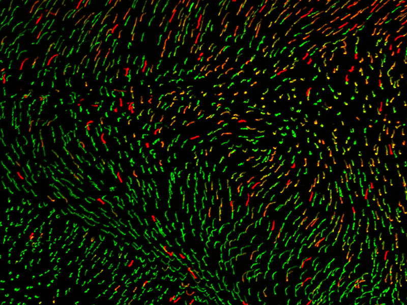
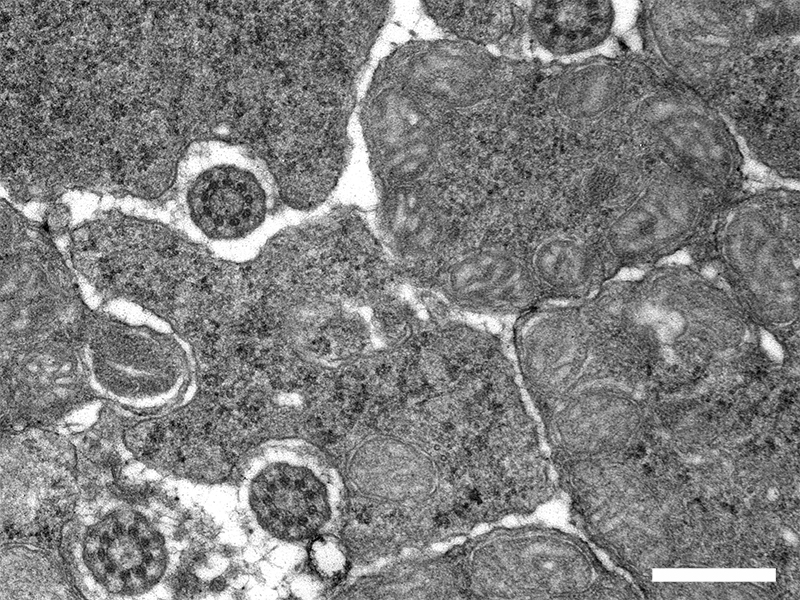
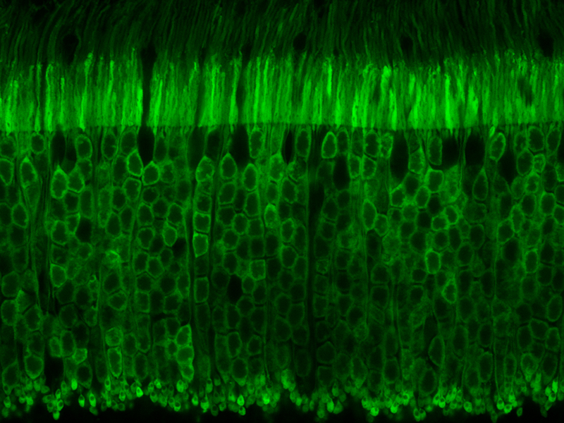
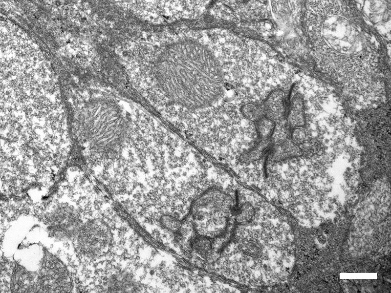
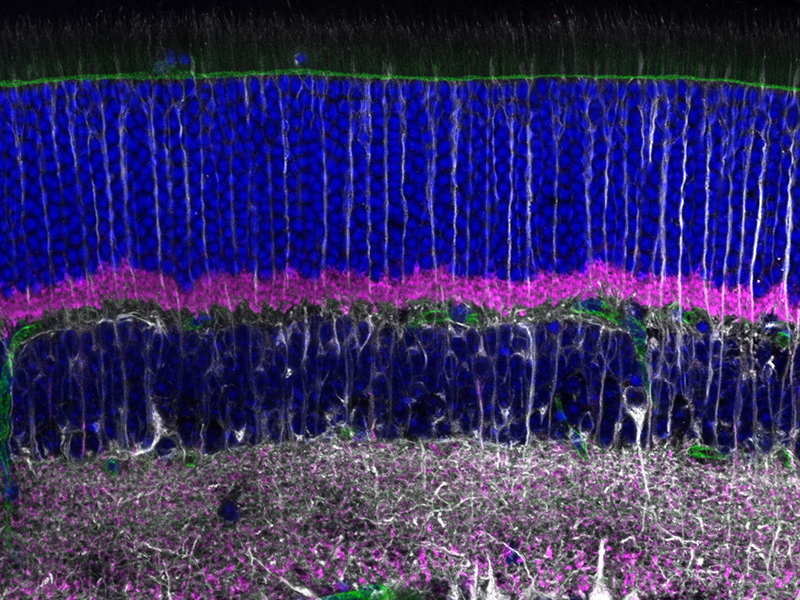
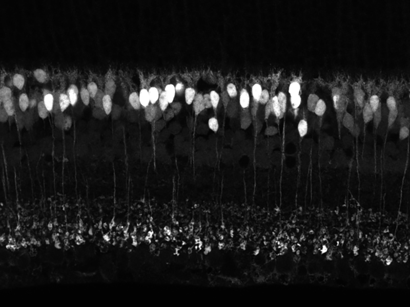
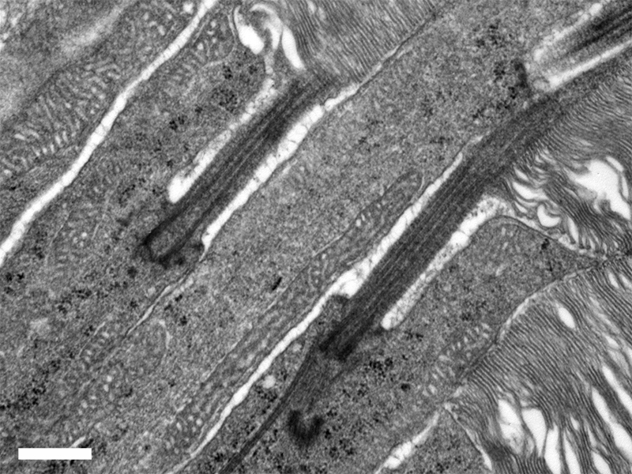

Cone photoreceptors labeled with different opsins in a flatmount mouse retina

TEM cross section of photoreceptors through the connecting cilium and inner segment

Mouse photoreceptors labeled via transgenic expression of NRL-GFP

TEM image showing ribbon synapses in rod spherules

Mouse retinal cross section labeled with tubulin, VGLUT1, and DAPI

Mouse bipolar cells labeled via transgenic expression of Grm6-TdTomato

Rod spherules imaged using expansion microscopy

TEM section of photoreceptors showing the inner and outer segments separated by the connecting cilium